Overview
Note
Estimated time to complete: 60 Minutes
Foundation is used to automate the installation of the hypervisor and Controller VM on one or more nodes. In this exercise you will practice imaging a physical cluster with Foundation. In order to keep the lab self-contained, you will create a single node cluster on which you will deploy your Foundation VM. That Foundation instance will be used to image and create a cluster from the remaining 3 nodes in the Block.
- In following steps, you may replace xx with your assigned cluster ID
DIY Environment
A Hosted POC reservation provides a fully imaged cluster consisting of 4 nodes. To keep the lab self-contained within a single, physical block, you will:
- Destroy the existing cluster
- Confirm the number of SSDs
- Create a single node cluster using Node D
- Install the Foundation VM on Node D
- Use Foundation VM to image Nodes A, B, and C and create a 3 node cluster
Using an SSH client, connect to the Node D CVM IP 10.42.xx.32 in
your assigned block using the following credentials:
- Username - nutanix
- Password - check password in RX
Execute the following commands to power off any running VMs on the cluster, stop cluster services, and destroy the existing cluster:
Confirm the Number of SSDs
Confirm the number of SSD in your node D. This will determine which command we will use in the next section.
It is likely that all nodes in HPOC cluster will have similar SSD and HDD combination.
lsscsi
# Example output here
[0:0:0:0] disk ATA INTEL SSDSC2BX80 0140 /dev/sda # << SSD 1
[0:0:1:0] disk ATA INTEL SSDSC2BX80 0140 /dev/sdb # << SSD 2
[0:0:2:0] disk ATA ST91000640NS SN03 /dev/sdc
[0:0:3:0] disk ATA ST91000640NS SN03 /dev/sdd
[0:0:4:0] disk ATA ST91000640NS SN03 /dev/sde
[0:0:5:0] disk ATA ST91000640NS SN03 /dev/sdf
[2:0:0:0] cd/dvd QEMU QEMU DVD-ROM 2.5+ /dev/sr0
# this output shows that your node D has 2 SSDs
lsscsi
# Example output here
[0:0:0:0] disk ATA INTEL SSDSC2BX80 0140 /dev/sda # << SSD 1
[0:0:2:0] disk ATA ST91000640NS SN03 /dev/sdc
[0:0:3:0] disk ATA ST91000640NS SN03 /dev/sdd
[0:0:4:0] disk ATA ST91000640NS SN03 /dev/sde
[0:0:5:0] disk ATA ST91000640NS SN03 /dev/sdf
[2:0:0:0] cd/dvd QEMU QEMU DVD-ROM 2.5+ /dev/sr0
# this output shows that your node D has 1 SSD
After confirming the number of SSDs choose the appropriate cluster formation script in the next section.
Create Node D Cluster
-
Remaining in SSH client, access Node-D CVM and execute following commands
-
Confirm if your hardware nodes have 1 or more SSD. 2 SSDs are required to privide RF2 redundancy factor in a Nutanix cluster.
For the purpose of our lab, since we are creating 1 node cluster, we are good to have RF1 as a redundancy factor.
If there 2 or more SSDs on your nodes, use this command to create a 1 node cluster
-
If there is only 1 SSD in your nodes, use this command to create a 1 node cluster
-
After the single node cluster is formed, run the following commands to configure it
Note
The above command will create a
clusterfrom a single node using RF1, offering no redundancy to recover from hardware failure.This configuration is being used for non-production, instructional purposes and should NEVER be used for a customer deployment (unless the hosted application stores two copies of the same data e.g. Splunk). This should be agreed with the customer.
After the
clusteris created, Prism will reflect Critical Health status due to lack of redundancy.
Install Foundation VM
-
Open
https://<Node D CVM IP:9440(https://10.42.xx.32:9440) in your browser and log in with the following credentials:- Username - admin
- Password - check password in RX
-
Accept the EULA and Pulse prompts.
-
In Prism > Storage > Table > Storage Pool, select default storage pool and click update, then rename it to SP01
-
Check if there is a container named Images, if not, Click + Storage Container to create a new container named Images
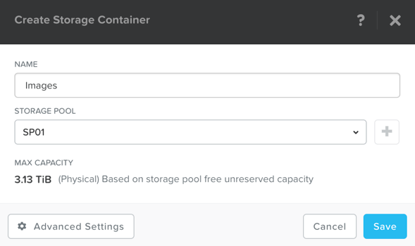
-
Go to configuration (Settings) page and navigate to Image Configuration, click +Upload Image
-
Fill out the following fields and click Save:
- Name - Foundation
- Image Type - Disk
- Storage Container Images
- Select From URL
- Image Source -
http://10.42.194.11/images/Foundation/Foundation_VM-5.2-disk-0.qcow2
Note
At the time of writing, Foundation 5.2 is the latest available version. The URL for the latest Foundation VM QCOW2 image can be downloaded from the Nutanix Portal.
Unless otherwise directed by support, always use the latest version of Foundation in a field installation.
For the puposes of this lab, the Foundation VM image is stored in a HPOC file server
-
Go to configuration page and navigate to Network Config
-
Before creating the VM, we must first create a virtual network to assign to the Foundation VM. The network will use the Native VLAN assigned to the physical uplinks for all 4 nodes in the block.
-
In the Prism Element UI click > Network Configuration > Networks > Create Network
-
Fill out the following fields:
- Name - Primary
- VLAN ID - 0
- Enable IP address management - leave it unselected
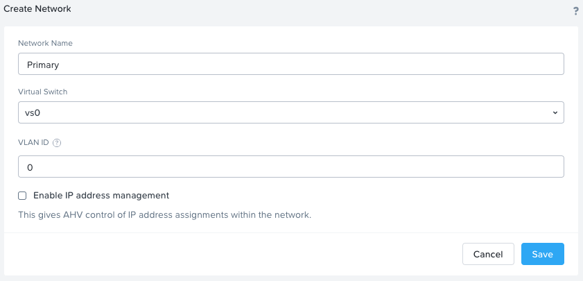
-
Click on Save
-
In Prism > VM > Table and click + Create VM.
-
Fill out the following fields
- Name - Foundation
- vCPU(s) - 2
- Number of Cores per vCPU - 1
- Memory - 8 Gi

-
Select + Add New Disk
- Operation - Clone from Image Service
- Image - Foundation
- Select Add
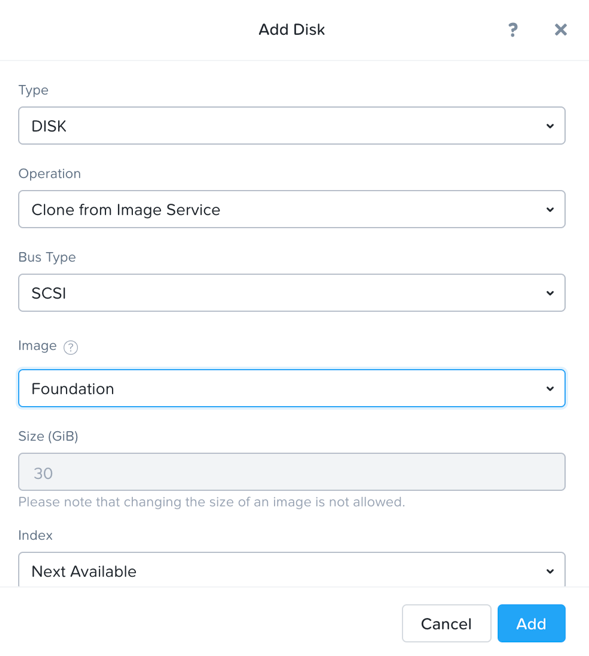
-
Select Add New NIC
- VLAN Name - Primary
- Select Add

Once NIC is added, you should see the NIC configuration in the VM create window as shown here
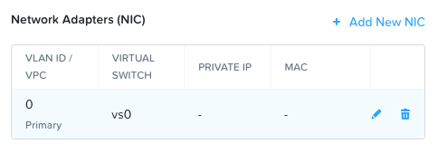
-
Click on Save
Config Foundation VM
-
Select your Foundation VM and click Power on.
-
Once the VM has started, click Launch Console.
-
Once the VM has finished booting, return to Prism element and note down the IP address of the Foundation VM.
-
Prism Element > VM > Table > Foundation VM > NICs
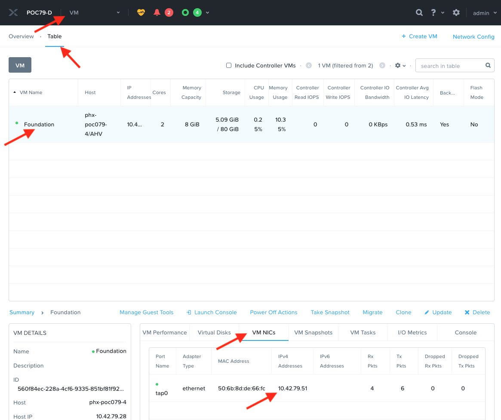
Caution
The IP address is received from the Primary network default DHCP pool. Your Foundation VM\'s IP address will be different.
Foundation Node ABC cluster
Note
We will do this section of the lab from your desktop (Windows or Mac) computer. This is the fastest way as remote consoles will be slow.
By default, Foundation does not have any AOS or hypervisor images. You can download your desired AOS package from the Nutanix Portal.
If downloading the AOS package within the Foundation VM, the .tar.gz package can also be moved to \~/foundation/nos rather than uploaded to Foundation through the web UI.
To shorten the lab time, we use command line to access foundation VM and download NOS binary to designated folder in it.
-
Open a terminal in your desktop computer (Putty or Mac Terminal) and ssh to Foundation VM through foundation IP
10.42.xx.45Login to the console of Foundation VMssh -l nutanix <Foundation VM IP> # provide default password # example # ssh -l nutanix 10.42.xx.51cd foundation cd nos curl -O http://10.42.194.11/images/AOS/5.20.3/nutanix_installer_package-release-euphrates-5.20.3-stable-x86_64.tarWhen you see 100% finish, AOS 5.20.3 package has been downloaded to
~/foundation/nosfolder. -
From you desktop computer, open Google Chrome browser and navigate to Foundation VM's IP
-
Access Foundation UI via any browser at
http://<Foundation VM IP> -
Fill the following fields:
- Select your hardware platform: Autodetect
- Netmask of Every Host and CVM - 255.255.255.128
- Gateway of Every Host and CVM - 10.42.xx.1
- Gateway of Every IPMI - 10.42.xx.1
- Netmask of Every IPMI - 255.255.255.128
- Under Double-check this installer\'s networking step
- Skip this Validation - selected
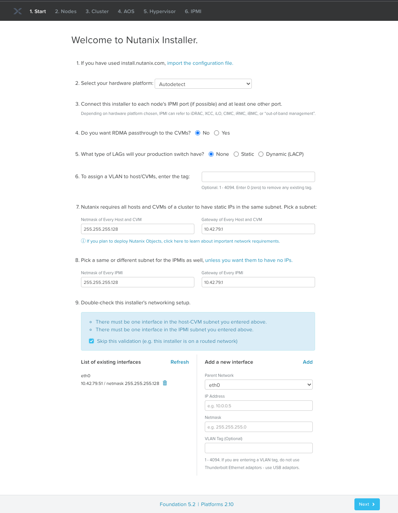
-
In new foundation page, Tools menu choose Remove Unselected Rows to clear all auto discovered nodes
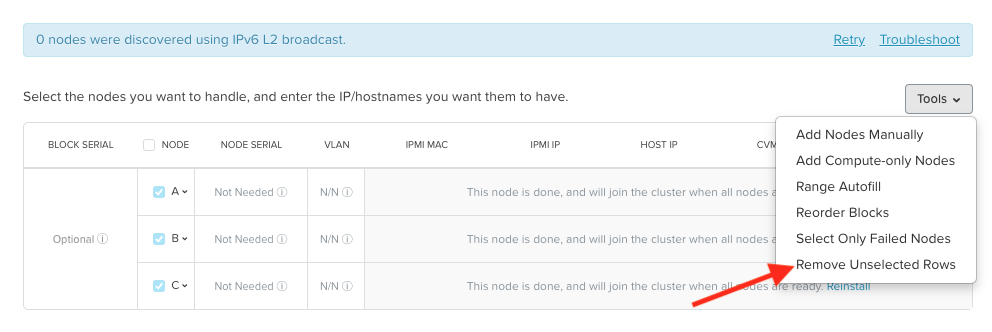
-
Click Add nodes manually
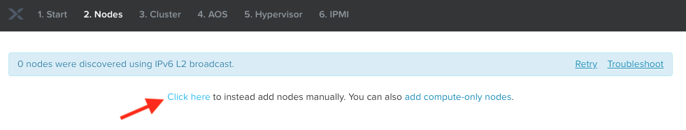
-
Fill in block information, fill in the following information:
- Number of blocks - 1
- Number of nodes - 3
- How should these nodes be reached? - choose I will provide the IPMI's MACs
-
Click Add

Tip
Foundation will automatically discover any hosts in the same IPv6 Link Local broadcast domain that is not already part of a cluster.
When transferring POC assets in the field, it's not uncommon to receive a cluster that wasn't properly destroyed at the conclusion of the previous POC. In that case, the nodes are already part of existing clusters and will not be discovered.
In this lab, we choose manually specify the MAC address instead in order to practice as the real world.
Info
There are at least 2 methods to get MAC address remotely.
Method.1: Identify IPMI MAC Address (BMC MAC address) of Nodes (A, B, and C) by accessing IPMI IP in a browser for each node
Method.2 Identify IPMI MAC Address of Nodes (A, B, C) by login AHV host with User: root, Password: default for each node and using the following commands:
-
Access Node A IPMI through IP 10.42.xx.33 with ADMIN/ADMIN
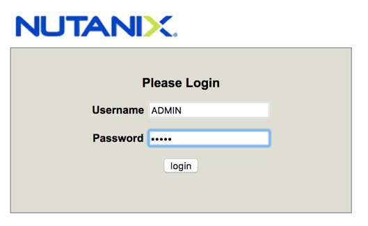

-
Record your NODE A/B/C BMC MAC address (in above example , it is ac:1f:6b:1e:95:eb )
Doing the same with your other 2 nodes B/C, access Node B and C IPMI through IP 10.42.xx.34/35 with ADMIN/ADMIN, record all 3 BMC MAC addresses.
-
Click Tools and select Range Autofill from the drop down list
-
Replacing the octet(s) that correspond to your HPOC network, fill out the top row fields with the following details:
- IPMI MAC - the three your just recorded down
- IPMI IP - 10.42.xx.33
- Hypervisor IP - 10.42.xx.25
- CVM IP - 10.42.xx.29
- HOSTNAME OF HOST -- POCxx-A
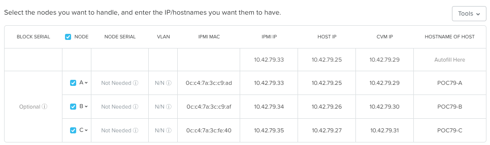
-
Click Next
-
In the Cluster page, fill the following details:
- Cluster Name - POCxx-ABC
- Timezone of Every Hypervisor and CVM - America/Phoenix
- Cluster Redundancy Factor - RF2
- Cluster Virtual IP - 10.42.xx.37
- NTP Servers of Every Hypervisor and CVM - 0.pool.ntp.org,1.pool.ntp.org,2.pool.ntp.org,3.pool.ntp.org
- DNS Servers of Every Hypervisor and CVM - 10.42.196.10
- vRAM Allocation for Every CVM, in Gigabytes - 32
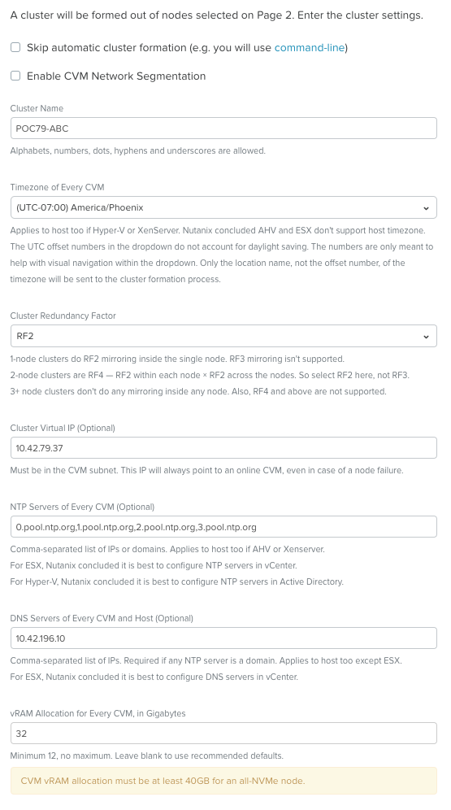
-
Click Next
- Select an AOS installer - Select your uploaded (through command line in previous steps) nutanix_installer_package-release-*.tar.gz file
- Arguments to the AOS Installer (Optional) - leave blank
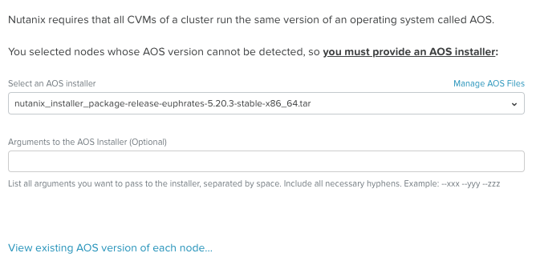
-
Click Next
-
Fill out the following fields and click Next:
- Select a hypervisor installer - AHV, AHV installer bundled inside the AOS installer

Tip
Every AOS release contains a version of AHV bundle with that release.
-
Click Next
-
Enter the existing IPMI credentials as ADMIN and ADMIN for all three nodes. Note that this will be different in the field.
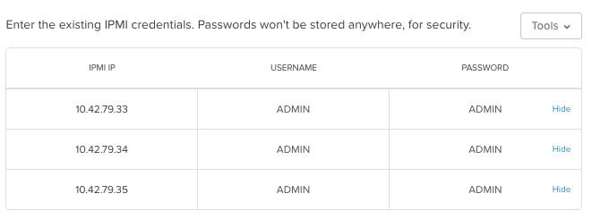
-
Click Start
-
Confirm that the installer will be active by clicking on Won't Sleep
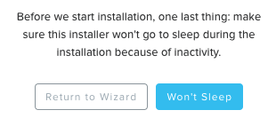
-
In the Warning of Data Loss Possibility window, click on Ignore and Re-image
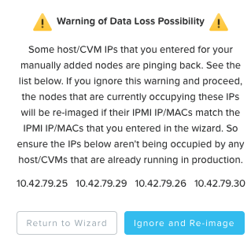
Foundation will run a couple of tests to make sure all the configuration details you have provided are correct and then direct you the installation progress page.
-
Click the Log link to view the realtime log output from your node.
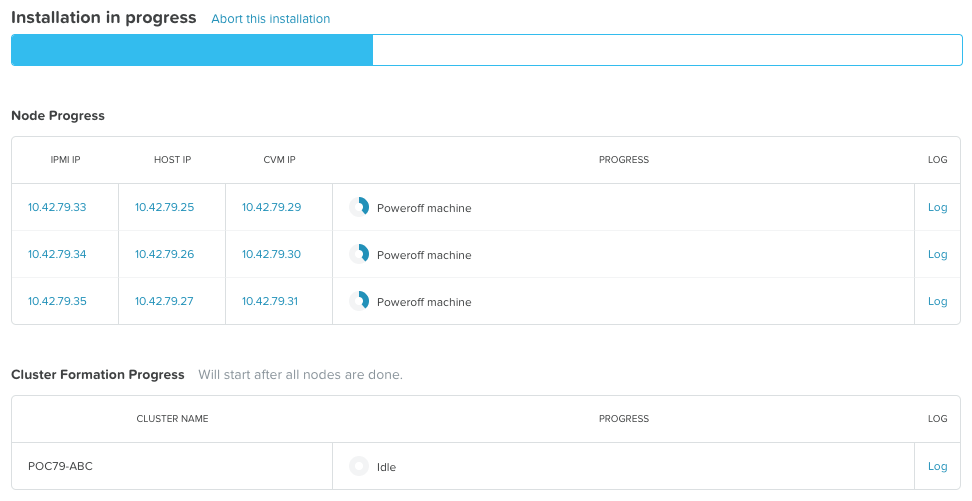
When all CVMs are ready, Foundation initiates the cluster creation process.
-
Monitor the foundation process until completion
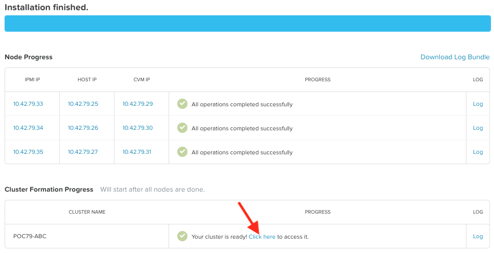
-
Once Foundation finishes successully, either click on Click here link as shown above or open
https://*<Cluster Virtual IP >*:9440(10.42.xx.37)in your browser -
Log in with the following credentials:
- Username - admin
- Password - default
- Change the Password - check password in RX

Takeaways
- You have successfully prepared your environment in a single operation called Foundation:
- Installed Hypervisor (AHV) - This can also be ESXi or Hyper V
- Installed CVM (AOS)
- Distributed File System (Data Plane)
- Prism Element (Control Plane)